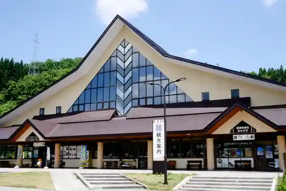
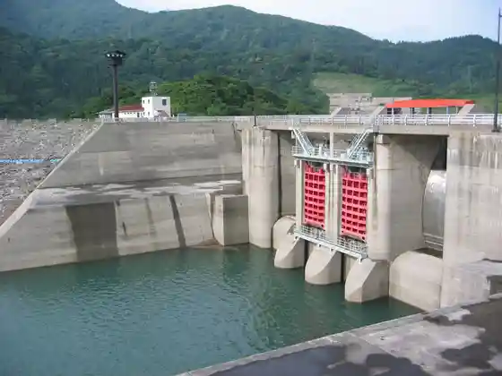
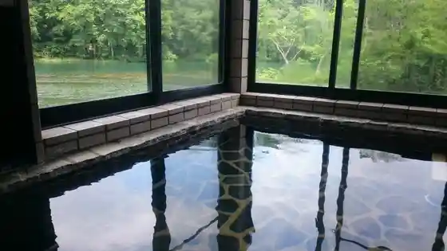

Roadside Station Nishikawa (Gassan Mei Mizu Kan) Mizusawa Onsen Kan
Nishikawa, Yamagata · 0237-74-2100 · Official / source link

Sagae Dam (Tsusho : Gassan Mizumi) Gassan Mizumi Dai Funsui
Nishikawa, Yamagata · 0237-75-2311 · Official / source link

Gassan Pearifuto (Gassan Ski Area)
Nishikawa, Yamagata · 0237-75-2025 · Official / source link
Gassan Shizu Onsen
Nishikawa, Yamagata · 0237-74-4119 · Official / source link

Gassan no Tohai Kuchi (Iwane Sawa Miyama Shrine)
Nishikawa, Yamagata · 0237-74-4732 · Official / source link
Gassan Ski Area (Gassan Harunatsu Sukii)
Nishikawa, Yamagata · 0237-75-2025 · Official / source link
Shiki no (Gassan Torekkingu)
Nishikawa, Yamagata · 0237-77-1332 · Official / source link
Yamagata Prefectural Shizen Hakubutsu Sono
Nishikawa, Yamagata · 0237-75-2010 · Official / source link
Jizo Numa
Nishikawa, Yamagata · 0237-84-0566 · Official / source link
Hondo Teraguchi no Miya Yudono Yama Shrine
Nishikawa, Yamagata · 0237-84-0566 · Official / source link
Sagae Damusupotsu Plaza
Nishikawa, Yamagata · 0237-75-2002 · Official / source link
Bandai Asahi National Park (Dewa Miyama Asahi Chiiki)
Nishikawa, Yamagata · 022-722-2870 · Official / source link
Gassan Torayawainarii Tora Ya Nishikawa Kojo
Nishikawa, Yamagata · 0237-74-4315 · Official / source link
Goshiki Numa
Nishikawa, Yamagata · 0237-84-0566 · Official / source link
Nishikawa Oi Sawa Shizen to Takumi Kan
Nishikawa, Yamagata · 0237-76-2112 · Official / source link
Gassan Yumihari Taira Oto Campground
Nishikawa, Yamagata · 0237-75-2003 · Official / source link
Mizusawa Onsen Kan
Nishikawa, Yamagata · 0237-74-4433 · Official / source link
Yumihari Heiko Sono ★ Gassan Yumihari Taira Oto Campground
Nishikawa, Yamagata · 0237-75-2040 · Official / source link
Ubagagaku
Nishikawa, Yamagata · 0237-74-4119 · Official / source link
Oi Sawa no Okuri
Nishikawa, Yamagata · 0237-84-0566 · Official / source link
Oi Sawa Yudono Yama Shrine
Nishikawa, Yamagata · 0237-74-2111 · Official / source link
Maruyama Kaoru Memorial Museum
Nishikawa, Yamagata · 0237-74-2965 · Official / source link
Hen Jakusui no Yu Tsutaya
Nishikawa, Yamagata · 0237-75-2222 · Official / source link
Shishi Kuchi Suwa Shrine
Nishikawa, Yamagata · 0237-74-2483 · Official / source link
Umi Aji Onsen
Nishikawa, Yamagata · 0237-74-3232 · Official / source link
Yamagataken Shizu Yaeijo
Nishikawa, Yamagata · 0237-75-2010 · Official / source link
Nishikawa Minkan Sawa Ski Area
Nishikawa, Yamagata · 0237-74-3131 · Official / source link
Dainichi Jiseki
Nishikawa, Yamagata · 0237-74-2111 · Official / source link
Onuma Onuma Campground (Nishikawa)
Nishikawa, Yamagata · 0237-84-0566 · Official / source link
Hachi Seizan Kanayama Shrine
Nishikawa, Yamagata · 0237-74-3565 · Official / source link
Gassan no Shuzo Museum
Nishikawa, Yamagata · 0237-74-2020 · Official / source link
Sagae Yama Cho to Tera (Shingonshu) / Saijo Sanju San Kannon Dai 17 Ban Cho to Kannon
Nishikawa, Yamagata · Official / source link
Amida Residence (Yoshikawa)
Nishikawa, Yamagata · 0237-74-4119 · Official / source link
Naganuma
Nishikawa, Yamagata · 0237-84-0566 · Official / source link
Yoshito Dai Shichi Daihachi no Hi (Mizusawa)
Nishikawa, Yamagata · 0237-74-2111 · Official / source link